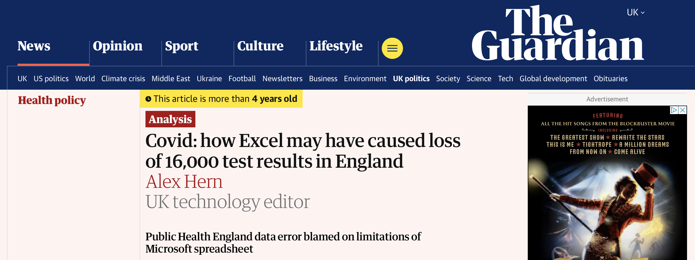
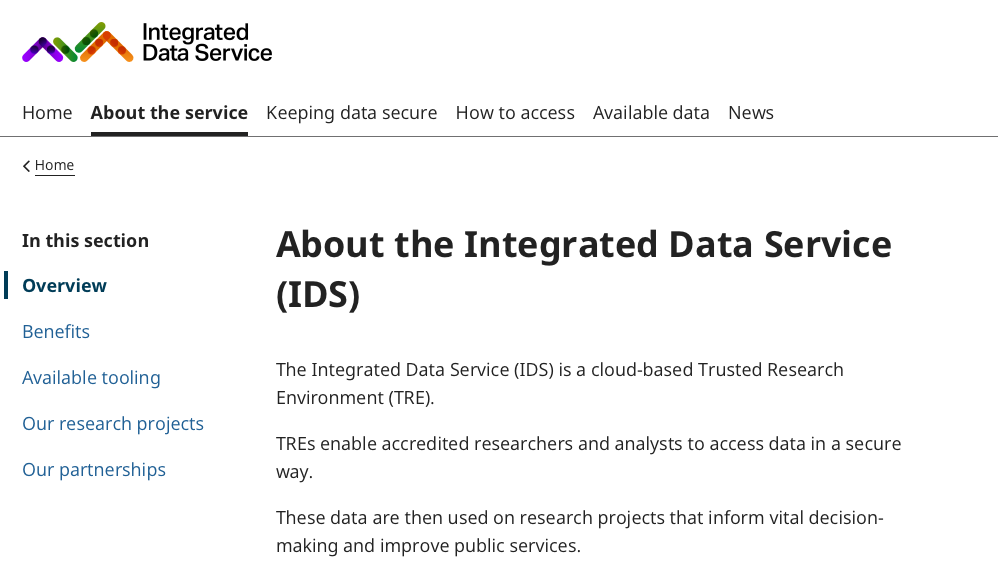
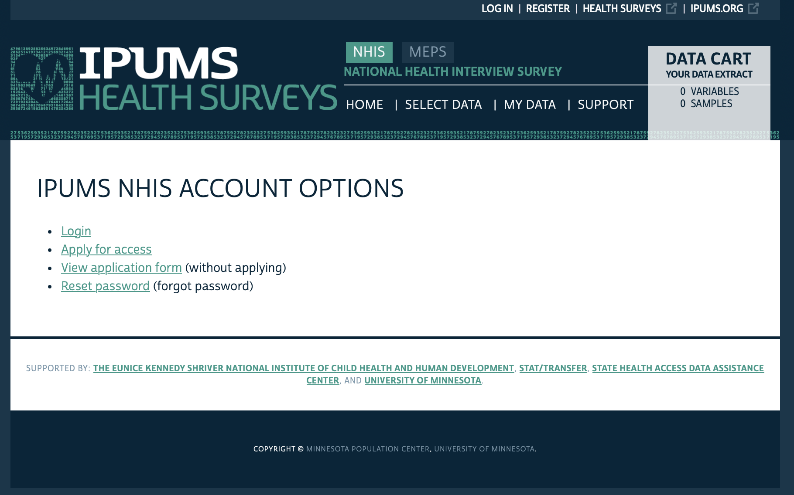
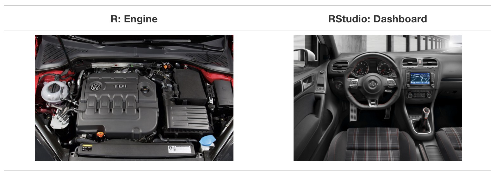
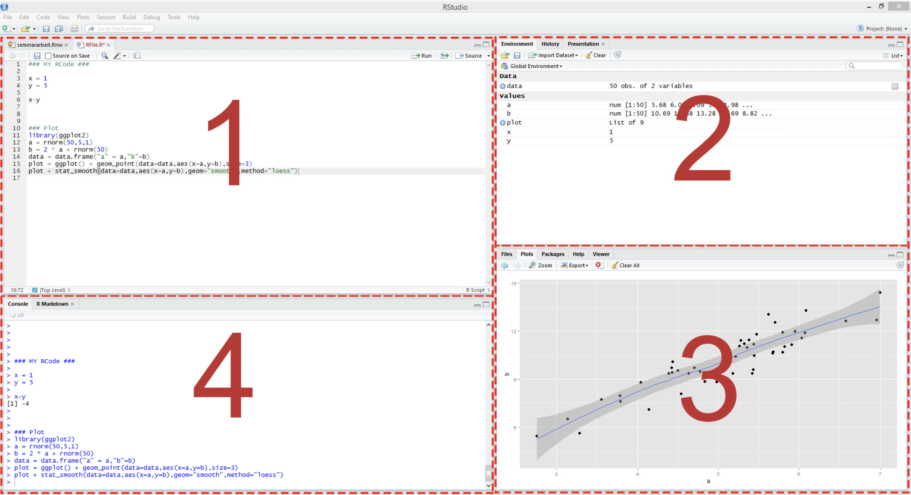
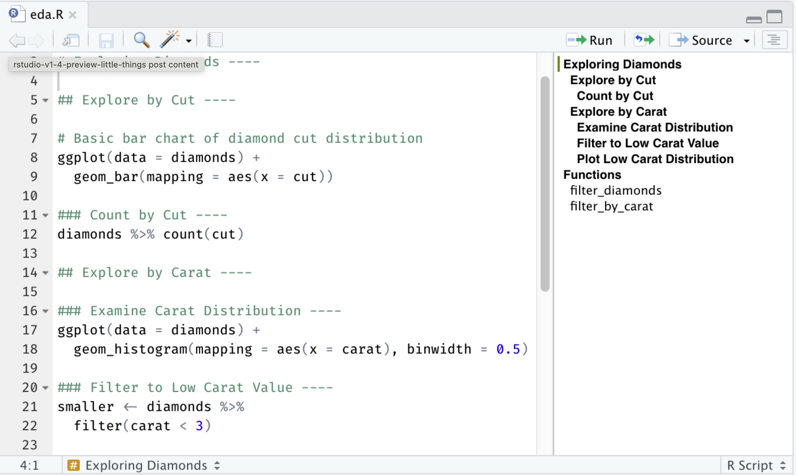
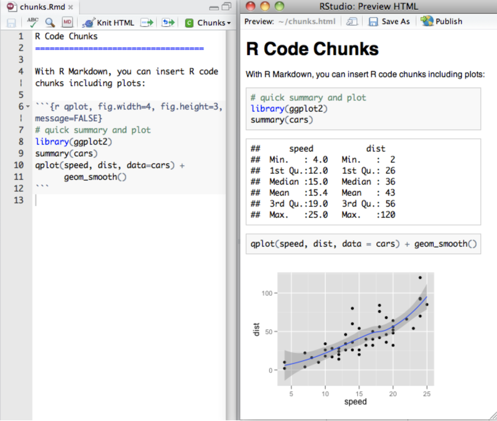

[1] 380 124 818[1] "Italy" "Canada" "Egypt" Introduction to Health Data & R
Uses of health analytics during COVID-19

| Lecture | Topic |
|---|---|
| 1 | Introduction to health data & R |
| 2 | Data visualization |
| 3 | Data wrangling & exploratory data analysis |
| 4 | Causal inference |
| 5 | Linear regression |
| 6 | Linear regression: uncertainty & hypothesis testing |
| 7 | Panel data: difference-in-differences & fixed effects |
| 8 | Limited dependent variables: LPM, logit, probit |
| 9 | Introduction to machine learning for health analytics |
| 10 | Course review |


| Pros | Cons | |
|---|---|---|
| Clinical trials | Able to control conditions, high internal validity | Expensive, slow |
| Surveys | Easy to access, often lots of detail | Low response rate, self-report bias (e.g. underreporting smoking), small samples |
| Administrative data | Large-scale, whole population | Hard to access, hard to work with, not designed for research |




.RData on exit.RData file
.Rmd file in the RStudio IDE by going to File > New File > R Markdown…
Work through the exercise which covers:
install.packages() (once per computer!)library() (once per session!)tidyverse: suite of tools for wrangling and visualizing datac()Challenge questions
| participant | age | height |
|---|---|---|
| Dave | 30 | 179 |
| Sally | 28 | 166 |
[...]df?df?